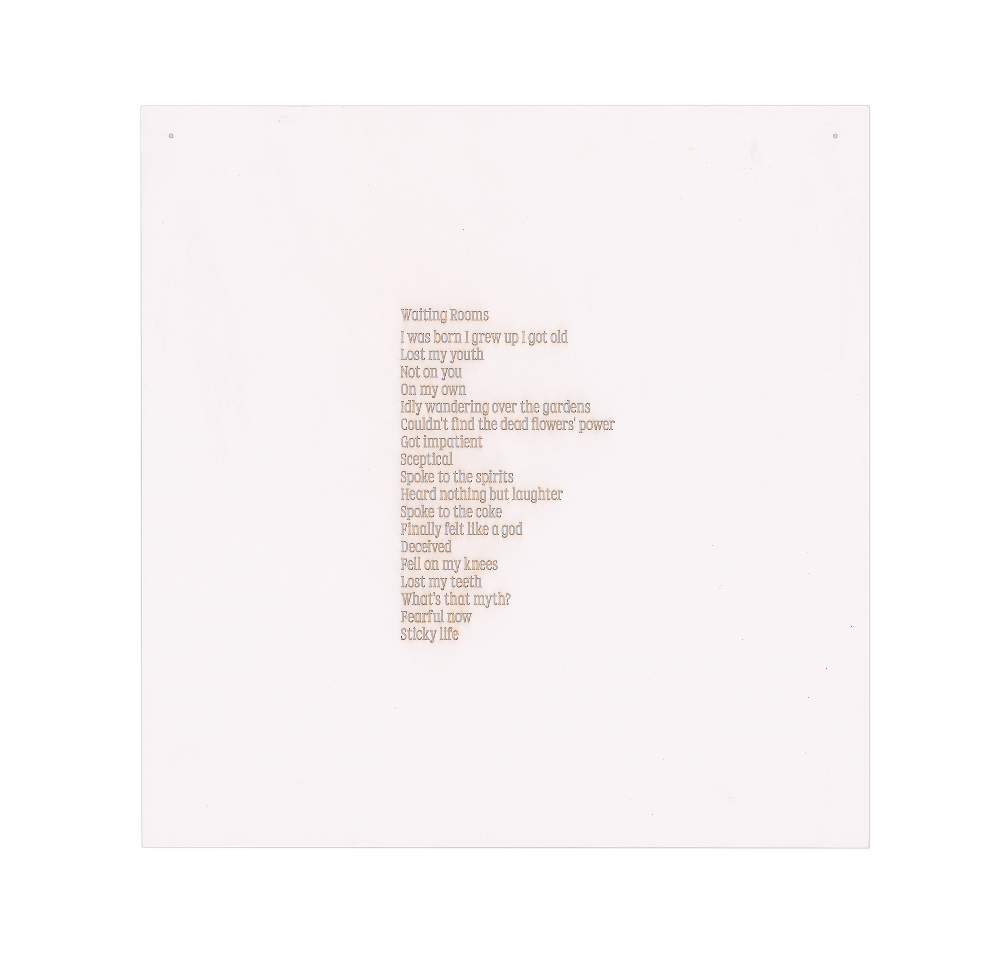
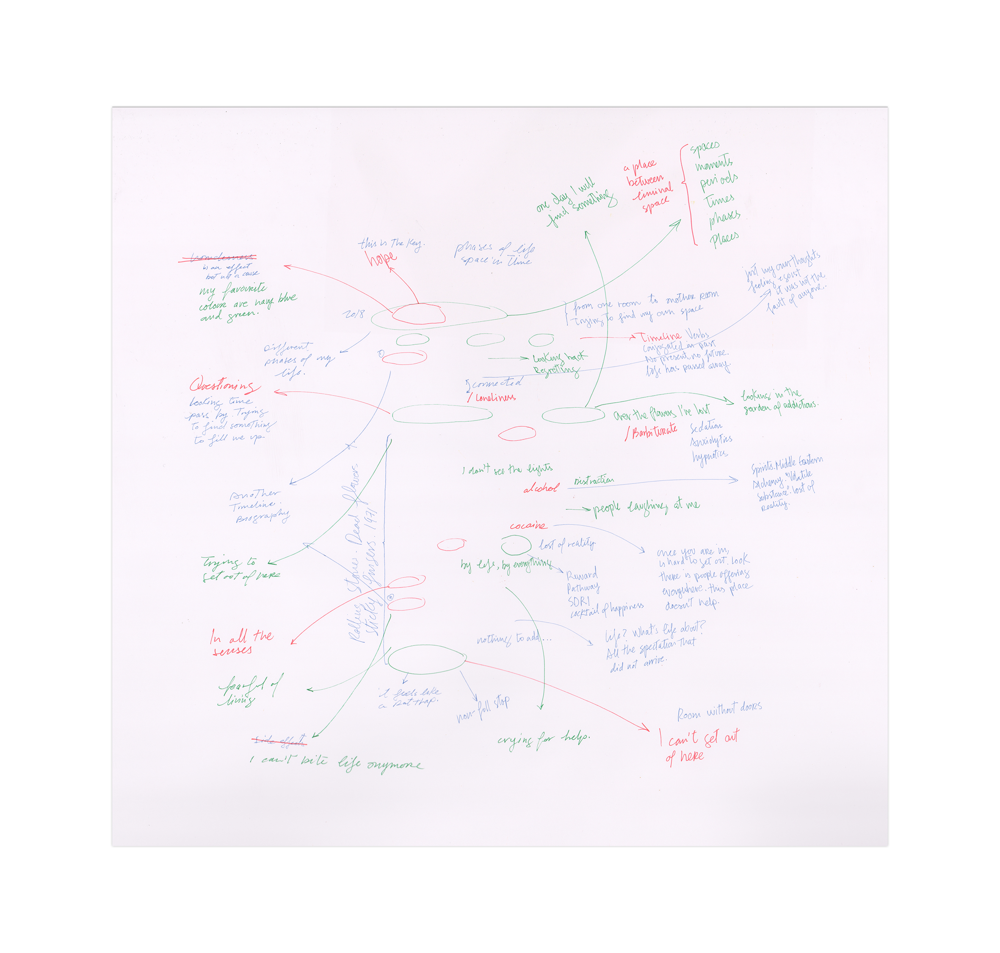
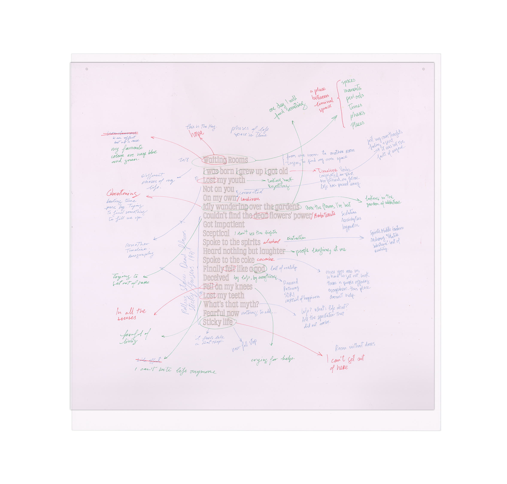
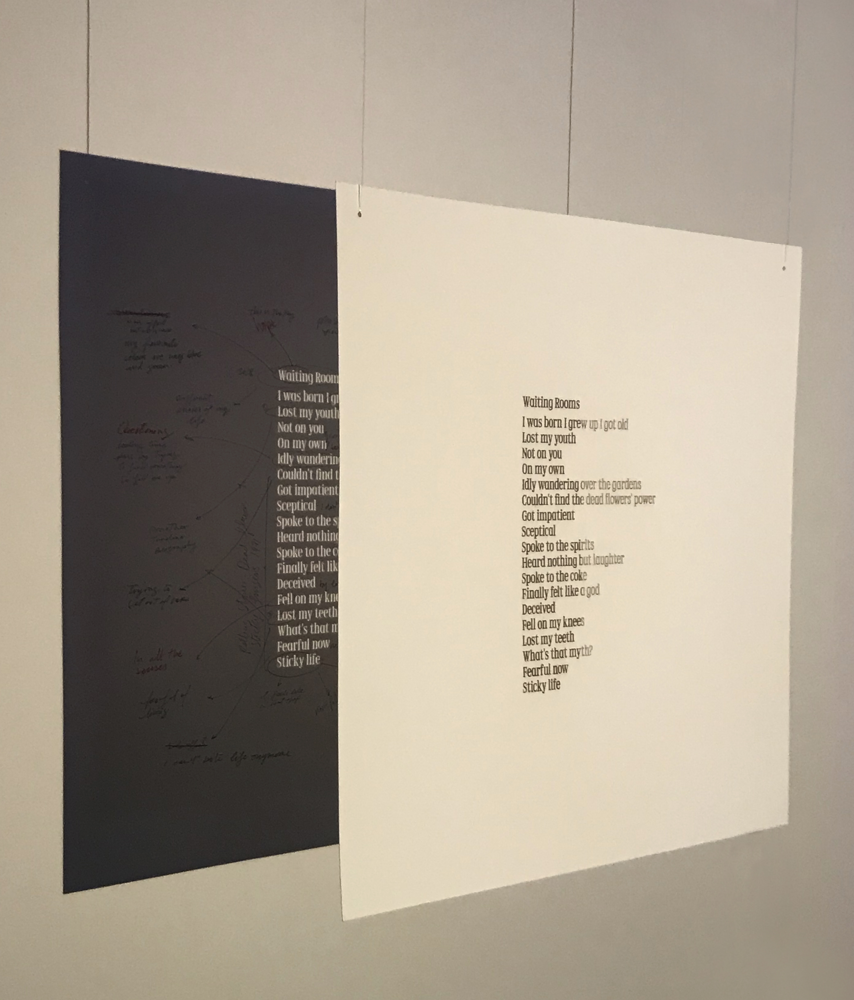
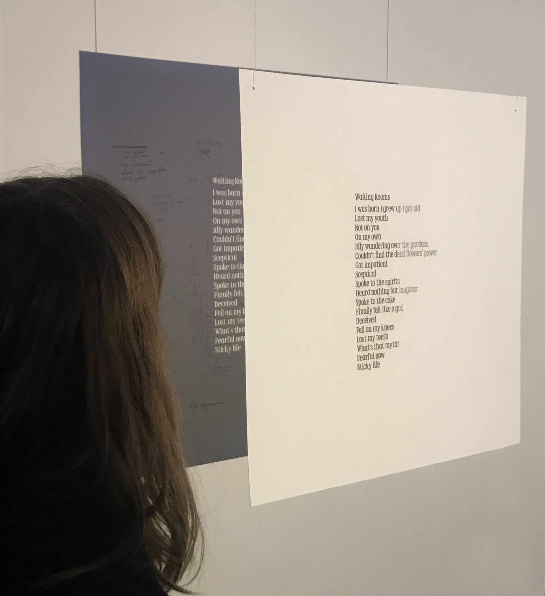
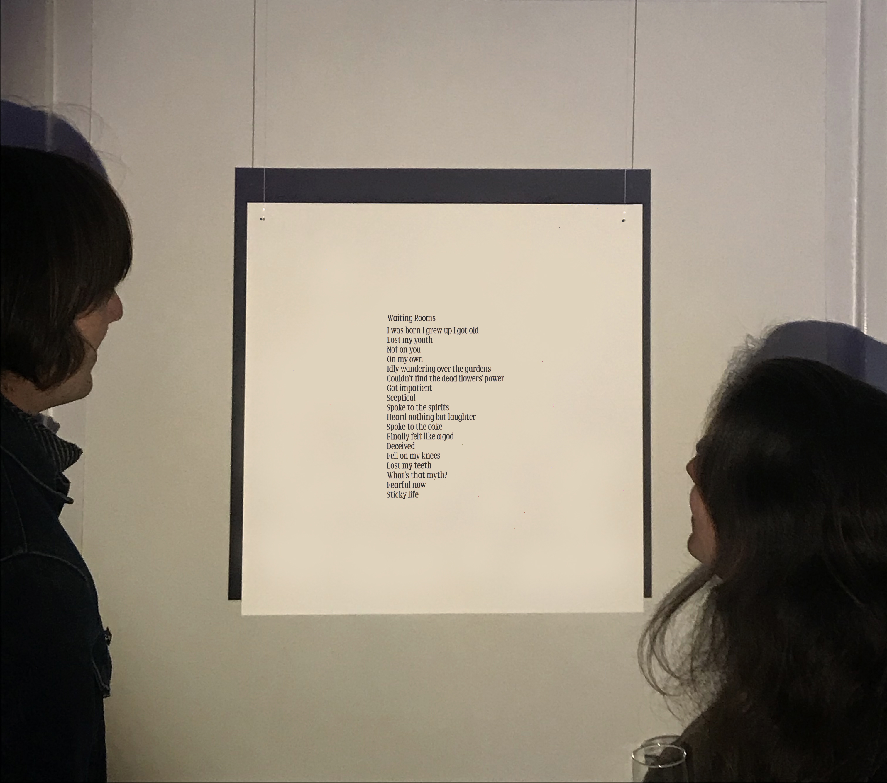
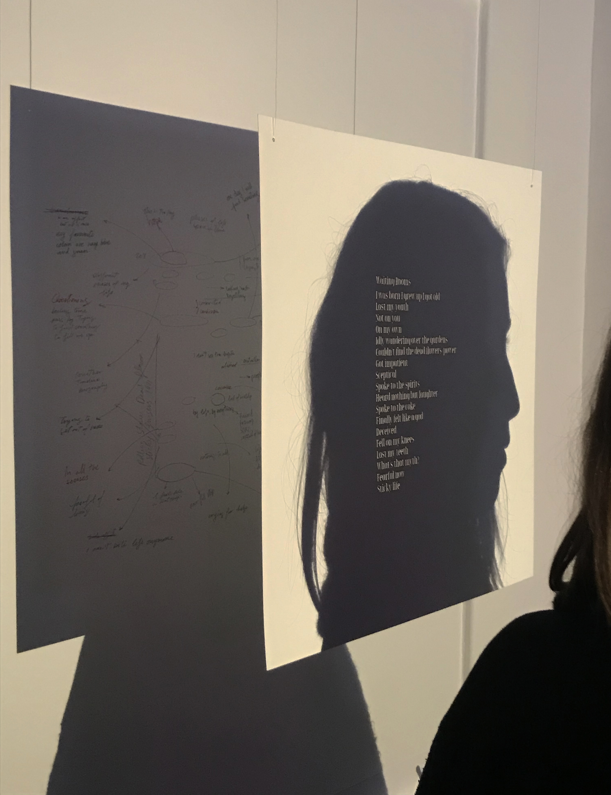

Waiting Rooms, 2019
      Specification of the piece:
50cm x 50cm
Laser cut paper. Coloured ink on paper.
Description:
This work is a transcript of a series of conversations with the Polish poet and artist Al Betownsky about one of his poems (Waiting Rooms). Al was a resident at Arlington at the time. The typeface is Retor and was generously donated by the Polish type foundry Laïc. The exhibition took place at Arlington Conference Centre, London.